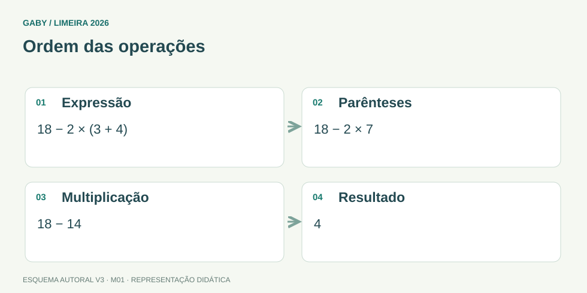

Objetivos do módulo
- Efetuar operações com inteiros, frações e decimais.
- Aplicar corretamente a ordem das operações.
- Resolver expressões e situações-problema com números reais.
Ordem das operações

Descrição em texto do esquema
- Expressão: 18 − 2 × (3 + 4)
- Parênteses: 18 − 2 × 7
- Multiplicação: 18 − 14
- Resultado: 4
Oficina visual · aplique o esquema
Calcule 24 ÷ 6 × 2 + 3 e mostre a ordem utilizada.
Atividade autoral complementar da V3. Registre sua resposta; a resolução está no arquivo de gabarito e revisão.
Mapa do conteúdo
1. Conjuntos numéricos na prática
Nos concursos de nível médio, “números reais” reúne naturais, inteiros, racionais e irracionais. O foco é operacional: sinais, frações, decimais, potências e raízes.
Ao transformar um decimal finito em fração, use potência de 10: 0,25 = 25/100 = 1/4.
2. Regras de sinais
| Operação | Regra |
|---|---|
| Adição de sinais iguais | somar módulos e manter o sinal |
| Adição de sinais diferentes | subtrair módulos e usar o sinal do maior módulo |
| Multiplicação/divisão | sinais iguais → positivo; diferentes → negativo |
3. Frações
Para somar ou subtrair frações, iguale denominadores; para multiplicar, multiplique numeradores e denominadores; para dividir, multiplique pela inversa da segunda fração. Simplifique sempre que possível.
4. Ordem das operações
A sequência segura é: parênteses/agrupamentos; potências e raízes; multiplicações e divisões; adições e subtrações. Operações do mesmo nível são resolvidas da esquerda para a direita.
5. Estimativa e conferência
Antes de encerrar, estime o resultado. Se 49,8 × 2,1 ficou 1.045, algo está errado: 50 × 2 ≈ 100. A estimativa é um detector rápido de erros de vírgula e sinal.
Exemplos resolvidos passo a passo
Exemplo 1
Situação: Calcule 3/4 + 5/6.
Exemplo 2
Situação: Calcule −8 + 3 × 5.
Exemplo 3
Situação: Converta 2,75 em fração simplificada.
Pegadinhas e erros frequentes
- Somar numeradores e denominadores diretamente.
- Ignorar a prioridade da multiplicação.
- Perder o sinal ao multiplicar números negativos.
- Errar posição da vírgula em decimais.
Resumo de prova
- Sinais iguais na multiplicação/divisão → positivo; diferentes → negativo.
- Soma de frações exige denominador comum.
- Dividir frações = multiplicar pela inversa.
- Respeite a ordem das operações.
- Use estimativa para conferir.
Exercícios do módulo
Resolva sem consultar o arquivo de gabarito. As questões são autorais e construídas para treinar os conceitos do edital.
- 6
- 12
- 15
- 60
- 1/2
- 4/6
- 3/9
- 5/6
- −11
- −28
- 28
- 11
- 3,25
- 2,80
- 3,75
- 2,125
- 27/50
- 3/2
- 1/6
- 2/3
- 18
- 27
- 8
- 9
- 15
- 11
- 13
- 16
- 1/8
- 1/4
- 1/5
- 1/10
- −4
- −9
- 9
- 4
- 10
- 25
- 5
- 15
Quando terminar, abra Matemática 01 - Operações com Números Reais - Gabarito e Revisão.
Checklist de domínio
- ☐ Efetuar operações com inteiros, frações e decimais.
- ☐ Aplicar corretamente a ordem das operações.
- ☐ Resolver expressões e situações-problema com números reais.
Meta do módulo: 80% ou mais nas questões, sem depender de consulta.
Referências e conteúdos auxiliares
- IMPA/OBMEP — Portal da Matemática, módulosVideoaulas, exercícios e materiais por tema. Localize o assunto indicado no roteiro complementar do módulo.
- OBMEP — Introdução à AritméticaAprofundamento em números, operações, divisibilidade e resolução de problemas.
Referências externas de apoio consultadas para a V3 em 27/09/2026. A origem das questões é o material autoral do projeto; estes links não indicam que uma instituição publicou ou validou os exercícios. As páginas externas precisam de internet. Em informática, confira a versão do programa; em legislação, observe o recorte e as regras de atualização do edital.